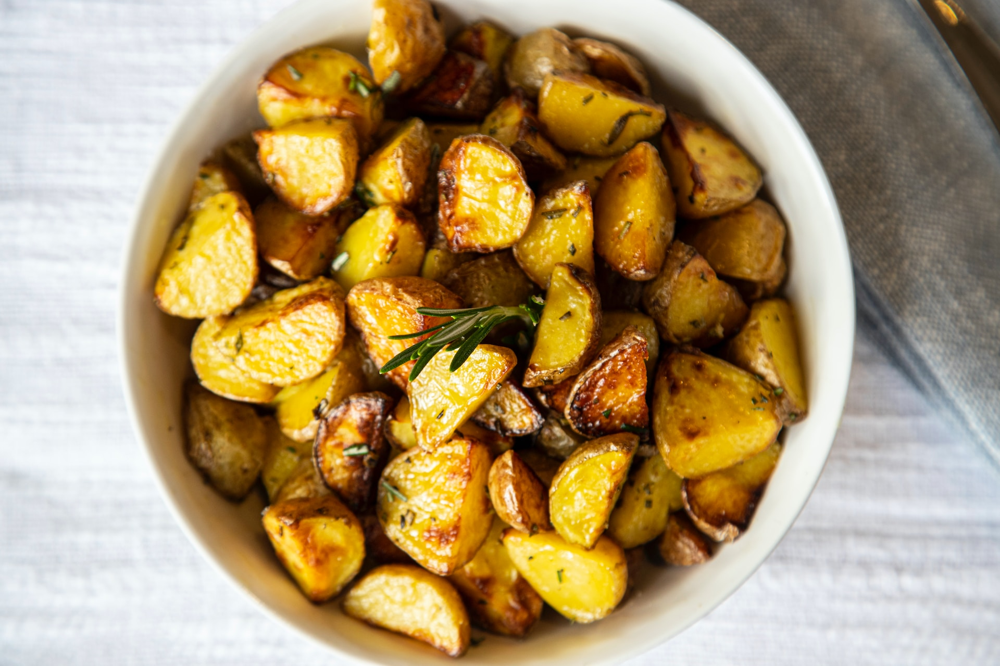

Air Fryer Lemon-Thyme Baby Red Potatoes

These air fryer baby red potatoes with lemon thyme make a simple side dish that goes with anything - beef, chicken, pork, fish - you name it.
The best part is they take minimal prep, and are mostly hands off.
Ingredients
- 12 ounces baby red potatoes, halved lengthwise
- 1 tablespoon olive oil
- 1 teaspoon lemon pepper seasoning
- 1 teaspoon fresh thyme
- 1/2 teaspoon salt
Steps
- Place potato halves in a bowl. Add olive oil, lemon pepper, thyme leaves, and salt. Toss until evenly combined.
- Preheat an air fryer to 400 degrees F (200 degrees C) for 8 minutes.
- Transfer potatoes with a slotted spoon to the basket of the air fryer. Cook for 20 minutes, shaking halfway through cooking time.